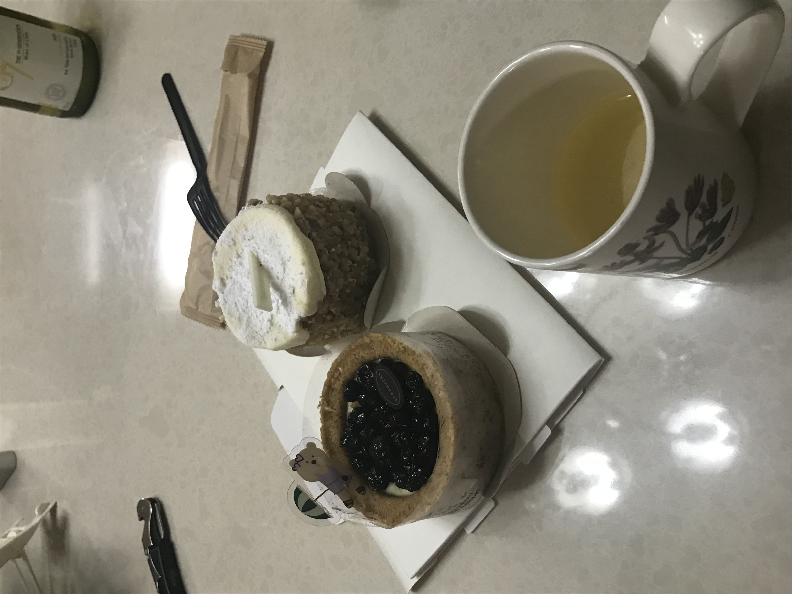
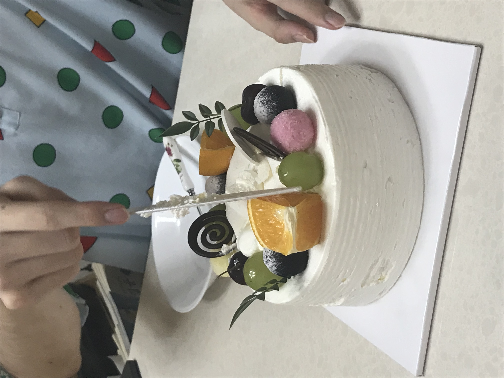

좀 늦게 일어났다. 날이 흐리다. 한 11시. 어제 늦게 자서 그렇다.
점심을 어떻게 먹고 잠이 엄청 쏟아졌는데 안자고 버텼더니
머리가 아팠다. 오늘은 과외는 없고 옹스짱의 생일이다.
그래서 18시에 옹스짱 집에서 옹스짱이랑 놀기로 했다.
티라미수를 내 집에서 하려고 했는데
정기휴일로 마트가 모두 닫았다.

G7 샤도네이
농수산물센터답지 않게 해외 유제품을 파는 공간이 생겼는데, 비싸서 마스카포네를 사는 건 포기했다... 그런데 민증을 안 들고와서 폰타나 봉골레 소스만 사고 나왔다. 그리고 집에 있다 다시 나와서 샀다. 그런데 비가 엄청 오는 것이다! 맞고 갈 순 없어서 통계학과에서 입학선물로 준 우산을 쓰고 갔다. 유용하다.
그리고 투썸에서 티라미수를 사기로 했다. 투썸이 멀리 있어서 귀찮다가 갑자기 롯데마트 한쪽에 투썸 로고가 보이는 것이다. 그래서 롯마 안으로 들어갔는데, 롯마가 공사중이어서 에스컬레이터를 타고 3층으로 못 간다고 엘레베이터를 타라고 했다. 그래서 엘레베이터에 탔는데 얘는 또 3층 버튼에 공사중이라고 붙여놓고 안눌리게 해놨다. 어이가 없어서 약속시간도 늦었는데 그냥 나왔다. 그럴거면 3층 식당가 정상 운영은 왜 붙여놓은거지? 그래서 근처 스벅에서 맛있는 거 두개 사갔다. 블루베리 타르트랑 호두 당근 케이크. 웃긴 사진이지만 아래 있다. 호두 당근 케이크는 묵직한 식감에 크림치즈가 사이사이에 들어가 건강한 맛인 반면, 블루베리 케이크는 블루베리와 크림치즈가 잘 어울리면서, 겉 아몬드 반죽인 pâte sablés aux amandes의 조화가 짱이었다. 두꺼워서 신기했다. 우상단에 G7도 보이는군
짱
사진 좀 많이 찍어놓을 걸 그랬다. 그리고 잘 좀 찍을걸 그랬다.
이제 나도 블로거 비슷한 사람이 되었으니... 후후 소바같이 생긴 봉골레를 먹고 당충전을 했다.
유튜브에서 트위치 마술 장인 영상을 봤는데 신기했다. 어떻게 카드가
선반에 올려져있고 그런거지... 신기하다.
불문학 이야기를 했다. 몇 불문학은 노답
고딩인 옹이가 독서실로부터 와서 옹스짱네 가족들과 같이 생일 축하를 했다. 옹스짱네 가족 사이에서 옹스짱의 생일 축하를 빌었다.
옹스짱은 우리누나가 얼떨결에 사주게 된
재밌는 짱구잠옷을 자주 착용한다.
케이크에 알사탕처럼 보이는 대상은 엄청 단 트러플 초콜릿이었다! 케이크는 보편적으로 맛있었다. 아이싱을 대충한 구멍들이 보였지만 나보다는 잘했으니 짱이다. 생일날은 역시 맛있는 걸 먹어야지 ^.^